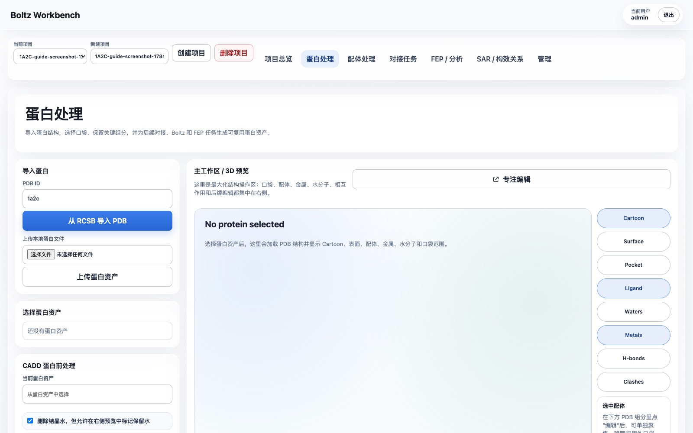
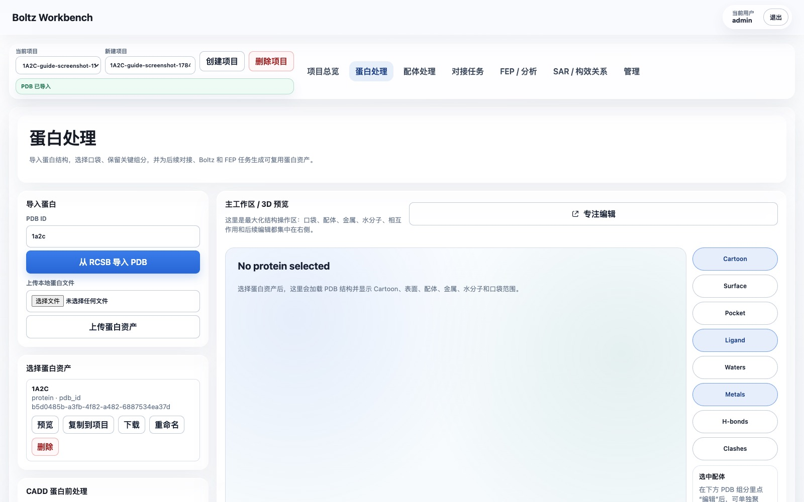
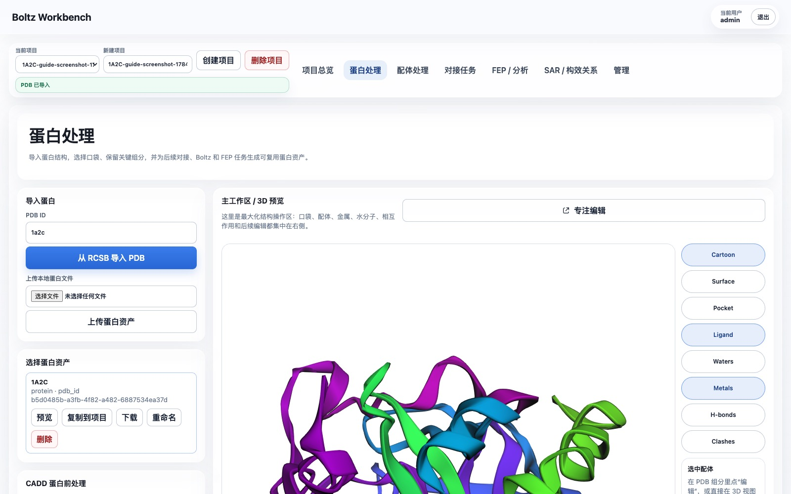
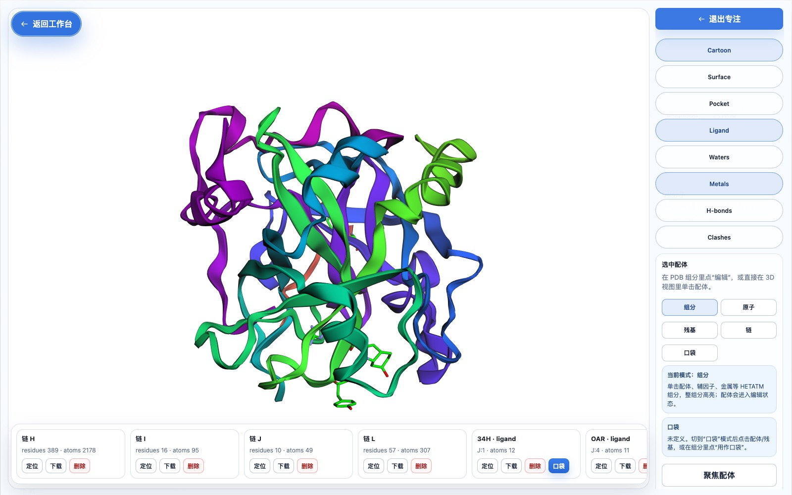
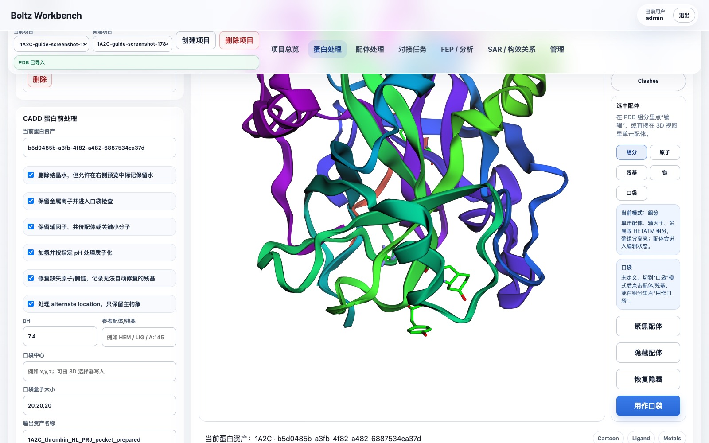
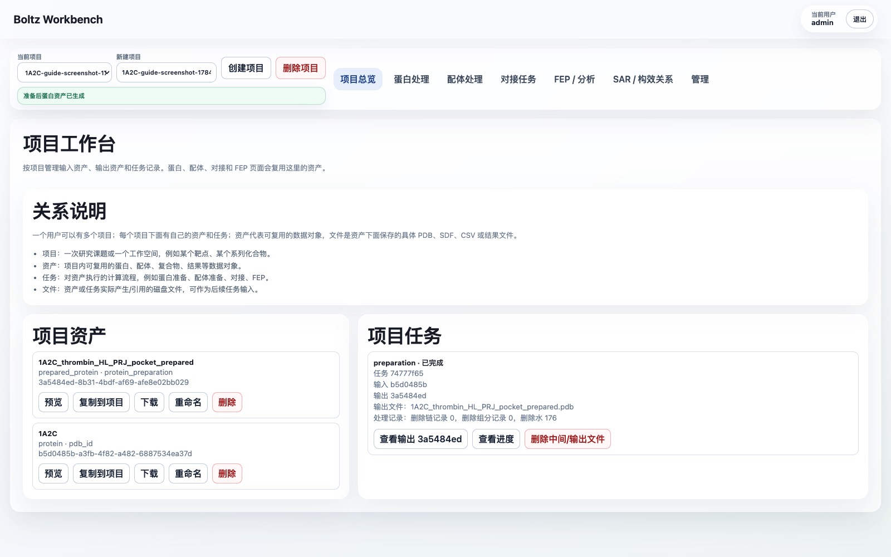

1A2C Protein Preparation Web Guide
This guide uses PDB 1A2C as an example. It explains how to choose the reference ligand, define a docking pocket, run protein preparation in WA-DD, and reuse the prepared receptor and pocket in downstream docking workflows.
English quick path
- Log in as
admin / admin123456. - Create a project such as
tutorial-1A2C-thrombin. - Open
Protein Preparation, import PDB ID1a2c, and preview the imported protein asset. - In the PDB component list, use
PRJ J:3as the pocket reference. It sits in the middle of the Aeruginosin 298-A inhibitor chain. - Set the pocket center to approximately
18.54, -14.79, 20.56and start with a20, 20, 20 Åbox. Increase to22, 22, 22 Åif you want to cover the full inhibitor chain more conservatively. - Keep thrombin chains
H/L; remove the original inhibitor chainJbefore preparing the receptor. Remove hirudin chainIif the task is ordinary small-molecule docking against thrombin. - Keep
NA H:626unless your downstream method requires all ions removed. Remove crystallographic waters by default. - Run protein preparation and use the generated
prepared_proteinasset plus thepocketasset in the docking page.
1. Which ligand to choose for this structure
1A2C is the complex of thrombin with the inhibitor Aeruginosin 298-A. In the PDB file this inhibitor is not a single three-letter ligand, but chain J:
chain J: 34H J:1 + LEU J:2 + PRJ J:3 + OAR J:4
The PDB component list in the web UI will show the HETATM components separately:
| Component | Type | Recommended as docking pocket |
|---|---|---|
34H J:1 |
Aeruginosin fragment | Can help confirm pocket boundaries |
PRJ J:3 |
Aeruginosin middle fragment | Recommended as the pocket center reference in the web UI |
OAR J:4 |
Aeruginosin terminal guanidinium fragment | Can help confirm pocket boundaries |
TYS I:363 |
Sulfonated tyrosine on hirudin chain I | Not recommended as a small-molecule docking pocket |
NA H:626 |
Sodium ion | Keep; do not use as a small-molecule pocket center |
HOH/WAT |
Crystallographic water | Delete by default unless key waters need to be retained |
Recommended approach:
- Biological reference ligand: use the entire
chain J, i.e. Aeruginosin 298-A. - Single-component reference for "use as pocket" in the web UI: select
PRJ J:3. - Recommended starting pocket center:
18.54, -14.79, 20.56. - Recommended starting pocket box:
20, 20, 20 Å.
Reason: PRJ J:3 is located in the middle of the chain J inhibitor. Using it as the center and adjusting the box to about 20 Å covers the entire binding region of 34H/LEU/PRJ/OAR. Do not use TYS I:363 to define the small-molecule docking pocket; it belongs to the hirudin fragment and is not the small-molecule ligand this example intends to replace or reproduce.
2. Import 1A2C in the web UI
- Open WA-DD.
- Log in:
- Username:
admin - Password:
admin123456 - Go to
Project Overview. - Create a new project, for example:
tutorial-1A2C-thrombin- Open the
Protein Preparationpage. - In the
Import PDB from RCSBinput, enter: 1a2c- Click
Import PDB from RCSB. - In the left
Select Protein Assetpanel, click the newly imported1A2C, then clickPreview.
The page before import looks like this:

After import is complete, the 1A2C protein asset appears on the left:

The 3D workspace on the right should display the protein structure, with chains, ligands, waters, metals, and other objects visible.

3. Select the reference ligand and define the pocket
- On the right side of the
Protein Preparationpage, clickFocus Edit. - In the Focus Edit window on the right, choose a mode:
- It is recommended to start with
Componentsmode. - In the bottom horizontal object bar, find:
PRJ · ligand · J:3- Click the
PRJ J:3object card, or click the corresponding ligand fragment in the 3D view. - Click
Use as Pocket.
In the Focus Edit window, the bottom horizontal object bar lists protein chains, ligands, metals, waters, and other PDB objects:

- Turn on the
Pocketdisplay switch and confirm that a blue pocket box appears in the 3D view. - In the pocket parameters on the right, adjust the box to:
SX = 20SY = 20SZ = 20- If you need more conservative coverage of the entire chain J, use:
SX = 22SY = 22SZ = 22- While adjusting, check whether the blue box covers the region of
34H/LEU/PRJ/OAR. - Click
Create Pocket Asset.
After selecting PRJ J:3, use it as the pocket reference:

Once created, this pocket asset appears in the project assets and is automatically filled into the pocket input of subsequent docking tasks.
4. What to delete and what to keep during protein preparation
Recommended parameters for this example:
| Item | Recommendation |
|---|---|
| Water molecules | Delete by default |
Metal ion NA H:626 |
Keep |
| Cofactors / key HETATM | Keep unless you clearly know they are not needed |
Reference inhibitor chain J |
If you intend to reproduce the ligand with docking, remove it from the receptor |
Hirudin chain I |
Decide based on your research goal; if only doing thrombin small-molecule pocket docking, it is recommended to delete it |
Thrombin chains H/L |
Keep |
Recommended receptor preparation strategy:
- Keep thrombin
HandLchains. - Delete chain
J, because it is the original co-crystallized inhibitor and should not remain in the receptor to be docked. - If the goal is ordinary small-molecule docking, also delete the
Ichain hirudin fragment, to prevent it from occupying an exosite and biasing the pocket environment. - Keep the
NAmetal ion unless the downstream method explicitly requires all ions to be removed. - Delete water molecules as the default starting point; if key waters are later found to participate in important interactions, retain them individually.
Web UI steps:
- In the object bar at the bottom of the Focus Edit window, find
chain J. - Click
Deleteto add the original inhibitor chain J to the deletion list. - If this task only studies the thrombin small-molecule pocket, also find
chain Iand clickDelete. - Exit Focus Edit and return to
Protein Preparation. - In the
CADD Protein Pre-Processingarea, confirm: - Remove structural waters: checked.
- Keep metal ions: checked.
- Keep cofactors, covalent ligands, or key small molecules: choose based on your research goal; in this example, if chain J has already been removed, you can leave it checked.
- pH:
7.4. - Suggested output name:
1A2C thrombin prepared for docking
Protein preparation parameter confirmation page:

5. Run the protein preparation task
- In
Current Protein Asset, confirm that the original1A2Casset is selected. - Confirm that the pocket parameters have been filled in, with the box at
20, 20, 20 Åor your manually adjusted values. - Click
Prepare Protein. - Go to
Project Overviewor the task list on the current page to view the task.
The task should display:
queuedrunningcompleted
When complete, a new prepared_protein asset is generated.
After the task completes, you can see the task card and output asset in the project overview:

6. View, download, and reuse the output
After preparation is complete:
- In the task card, click
View Output. - On the output asset page, confirm:
- Type:
prepared_protein - File: the prepared
.pdb - Metadata: includes deleted waters, deleted chains, pocket parameters, and processing statistics.
- Click
Downloadto download the prepared PDB. - In the subsequent
Docking Taskspage, select thisprepared_proteinas the protein input. - If another project also needs to use it, click
Copy to Projecton the asset card, enter the target project ID, and rename the copied asset.
7. How to handle failed tasks
If a task fails:
- In the task card, click
View Progressto read the error message first. - If the task has already produced partial output, click
Delete Intermediate/Output Files. - After modifying the parameters, click
Continue/Rerun. - After rerunning, a new output asset is generated, and the original task record is preserved for tracking.
8. Current implementation boundaries
The web UI currently supports trackable PDB file-level preparation:
- Delete specified chains.
- Delete specified HETATM components.
- Delete water molecules.
- Generate a downloadable, reusable
prepared_proteinasset that can be copied to other projects. - Record task status, progress events, output files, and cleanup statistics.
The following chemistry preparation steps are not yet actually performed:
- Add hydrogens.
- pH-related protonation.
- Missing atom / missing residue repair.
- Conformation selection for alternate locations.
These steps are recorded in the task metadata's unsupported_operations field, and will be executed only after PDBFixer/OpenMM, PropKa/PDB2PQR, Reduce, or similar workers are integrated in the future.